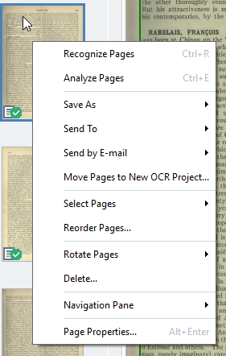

Corrupted images If an image in the OCR Project becomes corrupted, replace it with a new image. In the Pages pane of ABBYY FineReader, right-click on the page with the corrupted image. Figure: Context menu.  Select Page Properties > Reopen Page. In the Open Image window, navigate to the folder and image file and select it. The name of the original image file is shown on the Page Properties window.